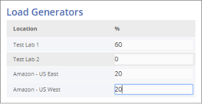
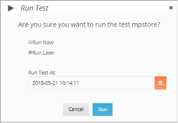

Managing Tests
Viewing Tests
You can view all the load tests you created in WebLOAD Dashboard. To view the load tests:
- In the menu bar, select Tests > Search.
The Load Tests page appears, listing the load tests in a table format.

The Load Tests table provides the following information and actions, for each Load Test:
| Item | Description |
|---|---|
| Name | The name of the Load test. Clicking the name opens the test’s definitions page, enabling you to edit them. Refer to Editing a load test . |
| Test Type | The type of test: Either URL/API, Script, or Template. |
| Last Update | The date and time when the test definitions were last updated, or the test was run manually. This field shows no indication of whether the test is being executed in recurrence mode. |
| Next Execution | The date and time when the test is next scheduled to run. Refer to Setting recurring test runs and Scheduling a one-time test run . |
| Last Execution | The date and time when the test last started running. |
| Last Session State | Whether the test passed or failed the last test execution. |
 |
Enables viewing the last session of this test. Selecting this option opens a Dashboard page displaying the last session of the test. Refer to Using Dashboards |
 |
Enables manually running this test now or at a specified time. Refer to Scheduling a one-time test run . |
 |
Instructs WebLOAD to stop the running test. |
 |
Enables viewing all this test’s sessions. Selecting this option opens a Load Sessions page (Figure 23) that displays all of this test’s sessions. |
 |
Instructs WebLOAD to delete the load test. Refer to Deleting a load test . |
Creating a new load test
You can create a new load test anytime. To create a new load test:
-
Perform one of the following:
-
Select Tests > New and click Add Load Test. The Create a new Load Test page appears.
- Select Tests > Search, and click + Add a new load test. The Create a new Load Test page appears.
- In the homepage, see the Create a new Load Test pane.

-
Select the type of test to create. Refer to the following for detailed explanations:
-
Creating a URL/API Load Test (on page 14)
-
Creating a Script Load Test (on page 17)
-
Creating a Template Load Test (on page 21)
Creating a URL/API Load Test
Use this option to instantly create a load test for testing a load on a URL and/or API.
After entering the load test specifications, WebLOAD automatically creates a test according to the specifications.
To create a URL/API load test:
-
Perform one of the following:
-
Select Tests > New and click Add Load Test. The Create a new Load Test page appears.
- Select Tests > Search, and click + Add a new load test. The Create a new Load Test page appears.
- In the homepage, see the Create a new Load Test pane.
- Select URL/API Test.
A Create Load Test page appears.

- Specify the test settings.
The following table describes the information you need to provide for defining the URL/API Load Test:
| Item | Description |
|---|---|
| General | |
| Test Name | The name of the Load test. |
| Request parameters | In this section, specify the URL of the site to be tested. You can in addition create an HTTP web service call. |
| Request URL | Specify the URL of the site to be tested. |
| *Method* | Optionally, specify a method for an HTTP web service call, from the drop-down list: Get, Post, Put, or Delete. |
| Request Body | Optionally, specify the web service body for the HTTP web service call. |
| HTTP Headers | Optionally, specify the web service header(s): Click Add for every header you wish to specify, and select the header from the dropdown list, or enter a custom header; then enter a value for the header. |
| Sleep | Specify the sleep time between each URL/API call. |
| Load Configuration | For each of the following, enter a number, or use the slider tool to specify the number. |
| Max Virtual Users | The maximum number of Virtual Users to generate. |
| Ramp up time in minutes | The time interval over which to increase the load from 0 Virtual Users to the number of virtual users specified in Max Virtual Users. |
| Time to run Max Virtual Users in minutes | The time interval during which to run the load at the max number of Virtual Users |
| Ramp down time in minutes | The time interval over which to decrease the load in order to return to 0 Virtual User |
| Load Generators | Select the load generator machines that will participate in the load test, as described in Specifying Load Generators for a load test . |
| Recurrence | Select this option if you wish to schedule automatic periodic execution of the load test. Refer to Setting recurring test runs . |
The URL/API load test generates an increasing load over a set time frame until reaching a defined maximum load size. The maximum load size is then run for a set period after which the load is reduced back to the base load again over a time frame defined by the user. The load increments are calculated automatically by WebLOAD based on the parameters defined. ![ref10]
Thus, the load will start with 0 Virtual Users and increase over the time frame defined in the Ramp up time field to reach the number of Virtual Users defined in the Max Virtual Users field. The test will then continue running with the maximum number of Virtual Clients for the period of time defined in the Time to run Max Virtual Users field, after which load will return to 0 Virtual Users value over the time frame set in the Ramp down time field.
-
Select one of the following:
-
Create Test – The test definitions are saved.
-
Create and Run Test – The test definitions are saved, and the test starts running immediately.
-
Run in Sandbox Mode – The system saves all the test definitions, but runs a limited test on the settings specified in the Request Parameters section while ignoring all the settings in the Load Configuration, Load Generators, and Recurrence sections.
This option is intended for SaaS users wishing to run a limited test prior to running the full test specified in the test definitions.
Creating a Script Load Test
Use this option to create a load test based on a WebLOAD script that was created in WebLOAD Recorder.
To create a script load test:
-
Perform one of the following:
-
Select Tests > New and click Add Load Test. The Create a new Load Test page appears.
- Select Tests > Search, and click + Add a new load test. The Create a new Load Test page appears.
- In the homepage, see the Create a new Load Test pane.
- Select Script Test.
A Create Load Test page appears.

- Specify the test settings. The following table describes the information you need to provide for defining the Script Load Test.
| Item | Description |
|---|---|
| General | The name of the Load test. |
| Scripts | Specify the scripts that will participate in the test, as well as their relative weights, as described in Specifying Scripts for a load test . |
| Load Configuration | For each of the following, enter a number, or use the slider tool to specify the number. |
| Max Virtual Users | The maximum number of Virtual Users to generate. |
| Ramp up time in minutes | The time interval over which to increase the load from 0 Virtual Users to the number of virtual users specified in Max Virtual Users. |
| Time to run Max Virtual Users in minutes | The time interval during which to run the load at the max number of Virtual Users |
| Ramp down time in minutes | The time interval over which to decrease the load in order to return to 0 Virtual Users |
| Load Generators | Select the load generator machines as described in Specifying Load Generators for a load test . |
| Recurrence | Select this option if you wish to schedule automatic periodic execution of the load test. Refer to Setting recurring test runs . |
The Script load test generates an increasing load over a set time frame until reaching a defined maximum load size. The maximum load size is then run for a set period after which the load is reduced back to the base load again over a time frame defined by the user. The load increments are calculated automatically by WebLOAD based on the parameters defined.
Thus, the load will start with 0 Virtual Users and increase over the time frame defined in the Ramp up time field to reach the number of Virtual Users defined in the Max Virtual Users field. The test will then continue running with the maximum number of Virtual Clients for the period of time defined in the Time to run Max Virtual Users field, after which load will return to 0 Virtual Users value over the time frame set in the Ramp down time field.
-
Select one of the following:
-
Create Test – The test definitions are saved.
-
Create and Run Test – The test definitions are saved, and the test starts running immediately.
-
Run in Sandbox Mode – The system saves all the test definitions, but runs a limited test on the settings specified in the Scripts section while ignoring all the settings in the Load Configuration, Load Generators, and Recurrence sections.
This option is intended for SaaS users wishing to run a limited test prior to running the full test specified in the test definitions.
Specifying Scripts for a load test
To specify the script participating in aScript Load Test:
- For every script you want to include in the Script Load test, click Add Script.

The Scripts page appears.

The Scripts page lists the scripts uploaded to the WebLOAD Dashboard. For details how to upload a script, refer toUploading Resources (on page 33). If a script was uploaded with the folder in which it is located, the folder name appears; in that case, click the folder name to navigate to the script itself.
- Select a script by clicking Select Script in the corresponding line.
You are returned to the Script Load Test page, with the selected script appearing in its Scripts list.

- In the % column, specify the relative weight of each script. Make sure that the percentages all add up to 100%. If you wish to give the scripts identical weights, click Make Equal.
Creating a Template Load Test
Use this option to create a load test based on a WebLOAD template file that was created in WebLOAD Console.
To create a template load test:
-
Perform one of the following:
-
Select Tests > New and click Add Load Test. The Create a new Load Test page appears.
- Select Tests > Search, and click + Add a new load test. The Create a new Load Test page appears.
- In the homepage, see the Create a new Load Test pane.
- Select Template Test.
A Create Load Test page appears.

- Specify the test settings. The following table describes the information you need to provide for defining the Template Load Test:
| Item | Description |
|---|---|
| General | |
| Name | The name of the Load test. |
| Path | Click Select Template to select a template from the list appearing in the Resources > Templates page that appears. |
| WebRM Virtual Clients allocation | This is relevant for a WebRM configuration. Specify the number of virtual users to allocate for this test from the floating WebRM license. |
| Recurrence | Select this option if you wish to schedule automatic periodic execution of the load test. Refer to Setting recurring test runs . |
-
Select one of the following:
-
Create Test – The test definitions are saved.
- Create and Run Test – The test definitions are saved, and the test starts running immediately.
Specifying Load Generators for a load test
Load generators are machines that bombard tested site with transactions to test site scalability and integrity. Both aURL/API Load Test and aScript Load Test require you to specify the load generators that will participate in the test. Note that the list of available load generators is defined by a Super Admin, as described inAdding Load Generators (on page 76).
To specify the load generators participating in a load test:
-
Keep in mind that each Location in the list defines a group of one or more load generators having the same “Location” tag. For a detailed explanation, refer to Setting Load Generators’ Location Tag (on page 78).
-
Select a group of load generators with an identical Location, by entering a non- zero percentage in the corresponding % column. The percentage specifies the relative weight of this group of load generators.

- Make sure the sum of all the percentages is 100%. ![ref8]

Setting recurring test runs
For each load test you create – seeCreating a new load test (on page 13) – you can schedule automatic periodic execution of the test.
Note that you can also, at any time, manually run or schedule a one-time test run. Refer toScheduling a one-time test run (on page 25).
To set automatic periodic execution of a load test:
-
In the Create Load Test page, accessed as described inCreating a new load test (on page 13), select the Recurrence checkbox.
-

-
Set the frequency: Every Day or Every Week.
-
For a weekly recurrence, specify the day of the week on which to run the test.
-
Define the exact time of day when to run the test.
-
Specify the Time Zone according to which the time is determined.
Scheduling a one-time test run
You can, at any time, manually run or schedule a one-time test run, as explained in this section.
Note that you can also schedule automatic periodic execution of a test, as part of test definition. Refer toCreating a new load test (on page 13).
To manually run a load test:
- In the menu bar, select Tests > Search. The Load Tests table appears (Figure 6).

-
In the line corresponding to the test you wish to run, click ![ref15]. A Run Test query is displayed.
-

-
Do one of the following:
-
To run the test now, click Run Now.
- To run the test at a specific later time, click Run Later, and specify the date and time for running the test. ![ref8]

- Click Run.
Editing a load test
To edit a load test:
- In the menu bar, select Tests > Search.
The Load Tests table appears.
- In the Name column, click the name of the test you wish to edit.
The test definition page appears. The following figure shows an example of the page that appears when selecting to edit a template load test.

-
Edit the test definitions as desired. For an explanation of the various fields, refer to the relevant explanation inCreating a new load test (on page 13).
-
Click Update.
Deleting a load test
To delete a load test:
- In the menu bar, select Tests > Search. The Load Tests table appears (Figure 6).
- In the line corresponding to the test you wish to edit, click ![ref17]. A Delete Test page appears.

- In the Delete Test page that appears, you can select between:
- Deleting the load test and all its session.
- Deleting only the load test, but keeping the test sessions.